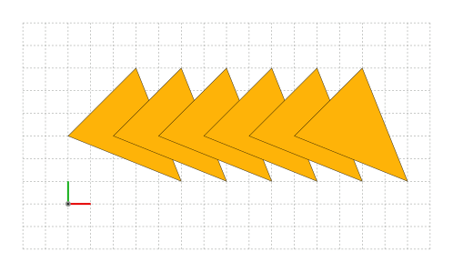

Transformations
Transformations are used to change the position, size, and orientation of shapes, paths, images, and batches.
In SİMETRİ, transformations are performed using transformation matrices. The transformation matrix is a mathematical representation of the transformation that can be applied to the points of the object.
Transformations can be performed successively by using repetitions. The number of repetitions can be specified using the reps argument. The default value is 0. This is a very powerful technique to create intricate patterns with ease.
When an object is not active, it cannot be transformed.
Transformation Types
All Shape, LinPath, Image, and Batch objects can be transformed by using one of the following methods:
translate(dx: float, dy: float, reps: int=0, key: Callable=None)rotate(angle: float, about: Point, reps: int=0, key: Callable=None)mirror(about: Line, reps: int=0, key: Callable=None)scale(scale_x: float, scale_y: float, about: Point, reps: int=0, key: Callable=None)glide(mirror_line: Line, distance: float, reps: int=0, key: Callable=None)shear(angle_x: float, angle_y: float, reps: int=0, key: Callable=None)transform(transform_matrix: array, reps: int=0, key: Callable=None)
There is a special transformation method called move_to that can be used to move a shape, path, image, or batch object to a new position without changing its size or orientation. The move_to method moves the midpoint of the target object's boundary box to the specified position by default. This can be changed by specifying an anchor point. The move_to method has the following signature:
move_to(pos: Point, anchor: Anchor=sg.Anchor.CENTER)
Example:
shape.glide(mirror_line=[(0, 0), (1, 1)], distance=45.5)shape.scale(scale_x=1, scale_y=2.5)shape.rotate(angle=sg.pi/4)
Composite Transformations
Composite transformations can be created by matrix-multiplying transformation matrices and then using the transform method.
SİMETRİ provides the following transformation matrices:
identity_matrix() -> arraytranslation_matrix(dx: float, dy: float) -> arrayrot_about_origin_matrix(angle: float) -> arrayrotation_matrix(angle: float, about: Point) -> arraymirror_matrix(about: Line) -> arrayscale_matrix(scale_x: float, scale_y: float, about: Point) -> arrayscale_in_place_matrix(scale_x: float, scale_y: float, about: Point) -> arrayglide_matrix(mirror_line: Line, distance: float) -> arrayglide_in_place_matrix(mirror_line: Line, distance: float) -> arrayshear_matrix(angle_x: float, angle_y: float) -> array
And their inverse matrices:
inv_translation_matrix(dx: float, dy: float) -> arrayinv_rotation_matrix(angle: float, about: Point) -> arrayinv_scale_matrix(scale_x: float, scale_y: float, about: Point) -> arrayinv_glide_matrix(mirror_line: Line, distance: float) -> arrayinv_shear_matrix(angle_x: float, angle_y: float) -> array
There are no inverse matrices for identity_matrix and mirror_matrix!
Inverses of identity_matrix and mirror_matrix are themselves.
Example:
| Composite Transformations | |
|---|---|
Transformations Without Repetitions
Transformations without repetitions are used to modify an object's position, size, or orientation without creating multiple copies of the object. This is useful when you want to apply a transformation to an object without creating a pattern or repeating the transformation.
Since the default value of the reps argument is 0, the transformation will be applied to the object without creating any copies.
Transforming Batch Objects Without Repetitions
When we apply a transformation to a Batch object, the transformation will be applied to all the applicable items in the batch. The number of items in the batch will remain unchanged.
Transformations With Repetitions
Transformations with repetitions are used to create multiple copies of an object with the same transformation applied to each copy successively. This is useful when you want to design a pattern of the target object.
The following snippet shows the equivalent way to create a pattern by using a Python loop.
{kind=link}
A Common Mistake
When we transform a Shape object with multiple repetitions, the result of this operation is a new Batch object with the original shape as well as the transformed copies of the original. This operation does not modify the original shape object.
Multiple repetitions do not modify the original object.
If we apply a transformation with multiple repetitions to a Batch object, the transformed copies of the items in the batch will be added to the batch. The original items in the batch will remain unchanged.
Transforming Batch objects with multiple repetitions grow them.
-
Since the number of repetitions is not zero, the
A common mistake
translatemethod does not modify the original shape object. It creates a new batch object with the original shape and the transformed copies of the original. The original shape object remains unchanged.
To capture the returnedBatchobject that contains the original and the transformed copies, use:
triangles = triangle.translate(dx=2*s, dy=0, reps=5)
canvas.draw(triangles)
Alternatively, if you don't need to reuse the returnedBatchobject, you can use:
canvas.draw(triangle.translate(dx=2*s, dy=0, reps=5))

{kind=link}

-
Now the transformation is applied to a
Batchobject.
We should be aware of the transformed object's type.
The result may be different depending on the type of the object we are transforming.
For transformations of Image objects, see the image-transformations section.